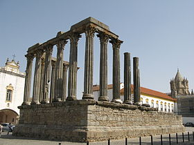

Évora é uma cidade portuguesa, capital do Distrito de Évora, na região do Alentejo e sub-região do Alentejo Central, com 49 252 habitantes, em 2011. Évora é a única cidade portuguesa membro da Rede de Cidades Europeias mais Antigas.
É sede do quinto município mais extenso de Portugal, com 1 307,08 km² de área e 56 596 habitantes (2011), subdividido em 12 freguesias. O município é limitado a norte pelo município de Arraiolos, a nordeste por Estremoz, a leste pelo Redondo, a sueste por Reguengos de Monsaraz, a sul por Portel, a sudoeste por Viana do Alentejo e a oeste por Montemor-o-Novo. É sede de distrito e de antiga diocese, sendo metrópole eclesiástica (Arquidiocese de Évora).
O seu centro histórico bem-preservado é um dos mais ricos em monumentos de Portugal, o que lhe vale o epíteto de Cidade-Museu. Em 1986, o centro histórico da cidade foi declarado Património Mundial pela UNESCO.
O clima da cidade é tipo mediterrânico, segundo a Classificação climática de Köppen-Geiger, com chuvas distribuídas de maneira desigual ao longo do ano: a pluviosidade máxima regista-se no inverno; no Verão, Évora é a capital de distrito mais quente, seguida da cidade de Beja. A temperatura média anual é de 15.8 °C, mas as variações mensais de temperatura são grandes; a média mensal mais alta dá-se em Agosto (23,3 °C) e a mais baixa em Janeiro (9,3 °C). A temperatura mais baixa alguma vez registada foi -5 °C e a mais alta 44.5 °C fonte: Instituto de Meteorologia. Os nevões são eventos raros. Um dos últimos ocorreu a 26 de Janeiro de 2006, dia em que também nevou em Lisboa.
